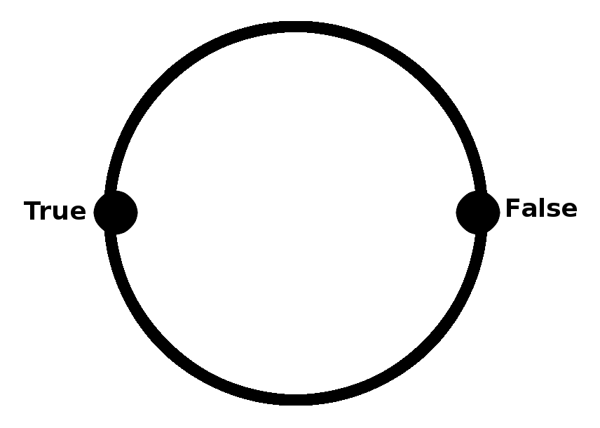
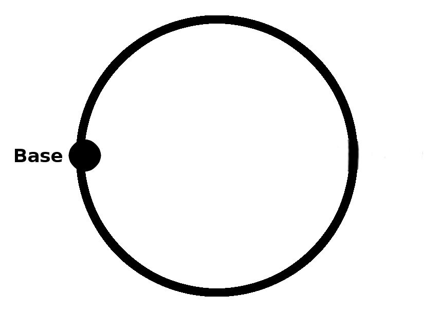

Mark Farrell
The Loop Space of the Circle Is the Integers: Part 1
I would like to expand on the discussion I started about homotopy type theory in one of my previous posts. Previously, I presented a rough outline of what the proof that the loop space of the circle is the integers would look like in a formal system for doing homotopy type theory. Now, I would like to how to make said proof precise. In this particular post, I would like to show how to construct the circle as a higher inductive data type and define functions from its loop space to the integers, and likewise a function from the integers to the loop space of the circle. I will leave the last main component of the proof, i.e. the construction of two logical homotopies showing that these functions are mutual inverses, for a follow-up post.
First and foremost, let’s precisely define the circle as a higher inductive data type. Recall that in the context of homotopy type theory, higher inductive data types are logical spaces (data types) that can be defined not only by constructors for their points, but also paths between their points, paths between theirs paths, and so on and so forth. Before we proceed to define the circle as a higher inductive data type, let’s try to gain some intuition for what higher inductive data types are, and how we might arrive at the definition of the circle.
Recall the definition of the booleans as an ordinary algebraic data type. In code, this looks like:
data Boolean = True
| False
Meanwhile, the booleans, viewed as a logical space with points inside of it, pictorially looks like:

If we add a constructor for paths from True to False, we obtain a higher inductive data type known as the interval:

And, in code, the interval looks like:
data Interval = True
| False
| AlongMeridian <i> [(i = 0) -> True, (i = 1) -> False]
We can just as well add another constructor for paths from True to False:

In code, this looks like:
data S1 = True
| False
| AlongNorth <i> [(i = 0) -> True, (i = 1) -> False]
| AlongSouth <i> [(i = 0) -> True, (i = 1) -> False]
We’ve just described a one-dimensional sphere as a higher inductive data type. However, we can simplify our definition of the one-dimensional sphere, arriving at our definition of the logical circle, which pictorially looks like:

Finally, in code, our definition for the circle as a higher inductive data type looks like:
data Circle = Base
| Loop <i> [(i=0) -> Base, (i=1) -> Base]
Now, let’s define the integers as an ordinary algebraic data type, so that we can define our functions to and from the loop space of the circle and the integers. In code, our definition for the integers as an algebraic data type looks like:
data Positive = One
| Successor (n : Positive)
data Integer = Negative (n : Positive)
| Zero
| Positive (n : Positive)
Helix (x : Circle) : Type = (CircleRecursion Type Integer SuccessorPath) x
I would like to give credit to Daniel Licata and Mike Shulman for their original type-theoretic proof that the first homotopy group of the circle is the integers. I would also like to give credit to Thierry Coquand for his contribution of a more recent proof to the cubical type theory project. My personal notes on the matter use ideas from these works.